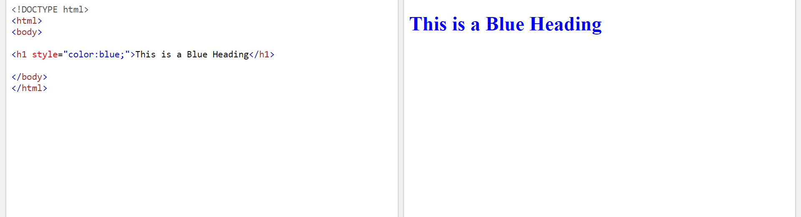

- An inline style may be used to apply a unique style for a single element.
- To use inline styles, add the style attribute to the relevant element. The style attribute can contain any CSS property.
- The example below shows how to change the color and the left margin of a h1 element.
Here's is an example:
